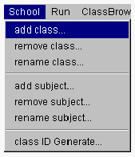
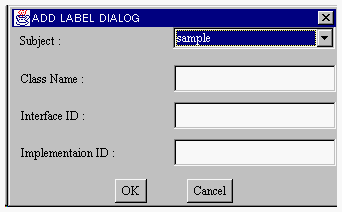
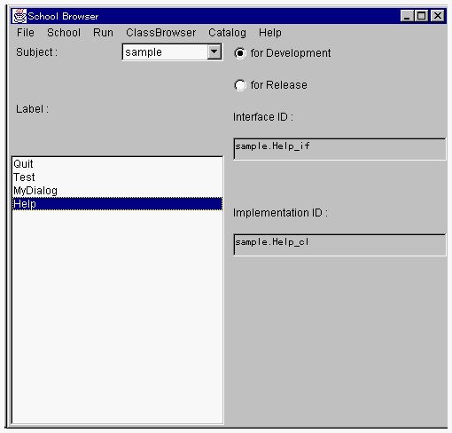

サブジェクトにクラスを登録する
サブジェクトを構成するクラスを登録するためには2つの方法があります。スクールファイルをインポートする方法とクラスを登録する方法です。ここでは、後者を説明しています。（「スクールをインポートする」参照）

１．スクールブラウザの School メニューから add class メニュー項目を選択します。

- クラスを登録するためのダイアログが表示されます。

２．Subject メニューリストからクラス登録を行うサブジェクトを選択してください。そして、登録するクラスの名前、インタフェース識別子、動作部識別子を入力します。そして、OKボタンをクリックすると、サブジェクトに新規クラス情報が登録されます。

登録されたサブジェクトはスクールブラウザの Label:リストにリストされます。

（Helpクラスを追加した例）
- 注意：
クラス名だけの登録も可能です。あとから、クラス識別子を自動付与することができます。
(c) 1996-1998 IPA, ETL, AT21, FSIABC, FXIS,
InArc, MRI, NUL, SBC, Sharp, TEC, TIS. All rights reserved.